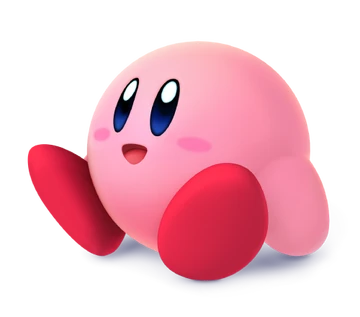

INTRODUCCION

Kirby (カービイ Kābī en Japonés) es un personaje de la gran empresa Nintendo y protagonista de una serie de juegos con su mismo nombre. Fue creado por Masahiro Sakurai. Hizo su primera aparición en 1992 en la consola portátil de Game Boy. Desde ese entonces Kirby apareció en diferentes consolas con juegos en 2D hasta que salió Kirby 64: The Crystal Shards, donde se puede apreciar a Kirby en 3D. Kirby también cuenta con una serie de anime: Kirby: Right Back at Ya!, que salió al aire el 6 de octubre de 2001. Es reconocido por su forma redonda y su característico color rosado.
Origen
Masahiro Sakurai, quien trabajaba para HAL Laboratory, estaba pensando en hacer un juego para la consola portátil, Game Boy, un juego para los jugadores novatos y que cualquiera pudiera pasar. Sakurai tenía que diseñar un personaje para el videojuego y se le ocurrió hacer una esfera sonriente como prototipo, sin embargo a los diseñadores les agradó tanto la "esfera" que terminó siendo el protagonista principal del juego.
Fue nombrado Popopo y el juego donde iba a aparecer se llamarías "Twinkle Popopo", más tarde el personaje pasaría a llamarse Kirby y la franquicia en Japón se nombró como Hoshi no Kaabii. Se desconocía por qué se le cambió el nombre al personaje, hay diversas teorías de las cuales destacan que su nombre proviene de la empresa Kirby Corporation, una empresa de aspiradoras y de ahí su habilidad de inhalar, también habían rumores que indican que su nombre es honor al asesor jurídico de Nintendo, John Kirby, de Latham & Watkins LLP, quien salvó a la empresa de una demanda de infrigimiento de derechos de autor sobre Donkey Kong presentada por Universal Studios, esta última resultó ser medianamente cierta ya que Shigeru Miyamoto ha declarado que al buscar un nuevo nombre para el personaje en una lista se toparon con el de 'Kirby' y le pareció gracioso que el personaje tuviera alguna conexión con el abogado, y de igual forma otro factor que influye en esta decisión fue que en Japón se le suele poner nombres con sonidos suaves a personajes lindos, pero Miyamoto pensó que 'Kirby' tenía sonidos duros por lo que le resulto divertido ponerle este nombre a la bola rosada. También se llegó a sugerir el nombre "Gasper"
Apariencia

Kirby es un ser de tamaño pequeño, tiene un cuerpo totalmente redondo y de un color rosa pastel. Tiene ojos ovalados de color azul y grandes zapatos de color rojo. En las mejillas tiene dos marcas de un color rosa más oscuro. Su cuerpo es muy flexible, lo que le permite ser aplastado sin que sufra daño y puede inflarse con un gran tamaño. No pesa mucho, lo que lo permite ser transportado y mide 20 centímetros. A largo de los años, Kirby ha sufrido varias transformaciones en su diseño. Sin embargo, siempre ha sido pequeño, redondo y rosado, las cuales son sus características que más lo identifican. La única vestimenta que usa son sus zapatos, pero adquiere sombreros o alguna parte de un enemigo si copia una habilidad.
Personalidad
Kirby es un pequeño ser amigable, inocente y alegre. Siempre se dispone a salvar Dream Land cuando esta se encuentra en peligro y nunca duda en ayudar a quien lo necesite. A Kirby le encanta comer mucho y su comida favorita es el Maxi Tomate, por eso en los juegos el Maxi Tomate repone toda su energía. Sin embargo en el anime su comida favorita es la sandía. También le gusta dormir mucho, especialmente durante el día. Aunque es pacífico, Kirby tiene sus dotes de lucha que saca para ayudar a quien se encuentre en peligro. No habla mucho, pero en diferentes juegos dice unas cuantas palabras, la explicación oficial de por qué Kirby no habla es que los personajes que no hablan a menudo se crean de esa manera para ser vistos como más entrañable y más fácil de identificar, como en Kirby's Epic Yarn, donde se puede ver a Kirby exclamar "¡Qué delicia!" en la introducción del juego. El concepto de que Kirby no habla está apoyado por la insistencia de Masahiro Sakurai de que Kirby no hable en el anime. Aunque en el anime Kirby apenas sabe decir unas cuantas palabras, logra nombrar comidas, personajes y los nombres de sus ataques. En la saga Super Smash Bros, también logra gritar una que otra expresión al copiar las habilidades de sus enemigos como Palutena, Shulk, Terry y Byleth. En la mayoría de mangas y cómics, Kirby habla con total normalidad.
Habilidades
Kirby cuenta con muchas habilidades que le permiten hacer todo tipo de movimientos. Su habilidad especial es la de inhalar a los enemigos y copiar sus ataques. Esta habilidad le permite tener muchas transformaciones que le permiten usar sus poderes para mejor beneficio. Durante la mayoría de sus juegos esa ha sido la habilidad que más lo identifica. También puede, gracias a su liviano y suave cuerpo, flotar, solo absorbe aire para inflarse y puede flotar por el aire. Otras de sus habilidades consisten en movimientos que le permiten moverse y atacar. Puede correr, saltar, deslizarse por el suelo, absorber enemigos para luego lanzarlos o tragarlos, puede nadar, puede lanzar aire de su boca a enemigos para eliminarlos, puede lanzar chorros de agua cuando este en ella entre otras habilidades.